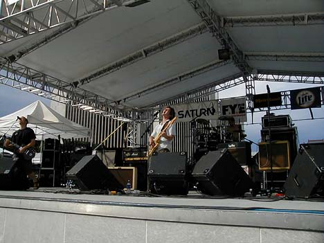
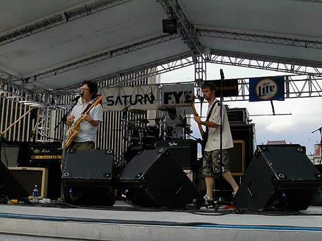
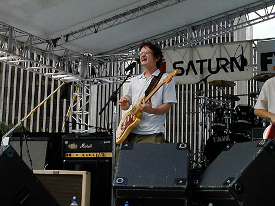
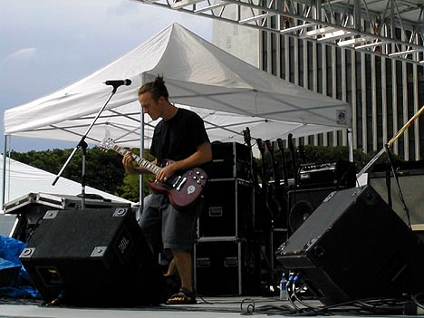
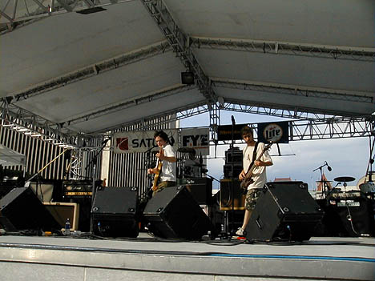
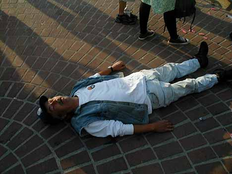
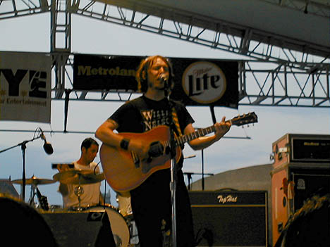
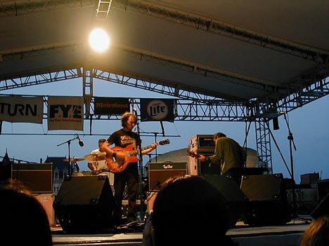
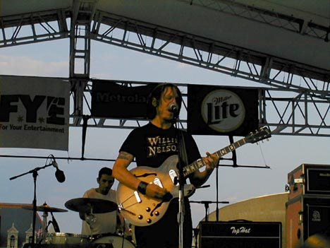
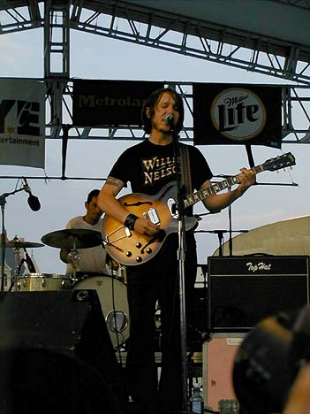

Big Orange Crayonmusical thingsThe Orange, Marah and Elliott Smith at the Empire State Plaza, July 21st 2000 There are pictures at the bottom! Yay this is the second good show I've gone to this week! The Orange were the first band to play. I've lost track of how many times I've seen them... Anyway, they did a great show. I feel kind of weird jumping around at the plaza because of all of the eyes in back of me, but I still managed to once or twice. I hope they made lots of new fans. There were lots of kids there that I don't remember ever seing at their shows, but they seemed to enjoy it. Maybe they'll show up at the show at Valentine's on the 29th. I think that Marah was the band that all of the guys with mullets were there to see. They were classic rock-ish. I left a few seconds into their first song to go wander around. Elliott Smith was the headlining guy. I have to admit that although this is the second Elliott Smith show I've gone to, I've never listened to his albums. Not that I don't like him, I just never got around to it. He really did a great show, though. There were a ton of people there by the time that he started playing, and he ended up doing two encores. I think I like his slower, softer songs the best, but the louder ones are pretty good, too. I think I'll buy some of his albums if I ever get a job. My only peeve was that they played a constant barrage of Dave Matthews Band and Led Zeppelin between the bands. It's a free show, though. I shouldn't complain. Pictures: The Orange      Marah  I watched this guy finish off a bottle of rum and pass out after their set. He got taken away in an ambulance. I hope he's ok, but there really are better places to do that... Elliott Smith     |